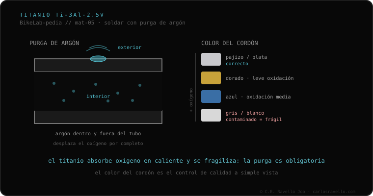

El titanio de cuadros es grado 9 (Ti-3Al-2.5V: 3% de aluminio, 2,5% de vanadio). Se suelda con TIG, pero con una exigencia que lo separa: hay que purgar con argón el interior y el exterior del tubo durante la soldadura. El titanio caliente absorbe oxígeno con avidez, y ese oxígeno fragiliza el cordón. La señal es visual y directa: cordón bien protegido = pajizo o plateado; azulado, gris o blanquecino = hubo contaminación.
Si tu cuadro es de titanio, este es el dato que decide en qué taller debe tocarse: no es cualquiera.
El titanio de cuadros es la aleación grado 9, Ti-3Al-2.5V, con un 3% de aluminio y un 2,5% de vanadio. Se suelda con TIG, igual que el acero o el aluminio, pero con una condición que lo separa del resto: hay que purgar con argón tanto el interior como el exterior del tubo durante la soldadura. La razón es química: el titanio caliente absorbe oxígeno con avidez, y ese oxígeno fragiliza el cordón. Si el aire llega al metal caliente, la unión queda quebradiza por dentro aunque por fuera parezca sólida.
La buena noticia es que el titanio te avisa. Hay una señal visual directa en el color del cordón: bien protegido queda pajizo o plateado; si aparece azulado, gris o blanquecino, hubo contaminación por falta de gas inerte. Por eso el titanio no se trabaja en cualquier taller: requiere el equipo de purga y la mano para lograrlo.

Saber leer el color del cordón es una de las preguntas clave que hacer al soldador: la purga de gas inerte es imprescindible en titanio y su ausencia produce la fragilización descrita. Encaja también con lo que ocurre en la zona afectada por el calor y con la diferencia general entre fundir el tubo o unirlo sin fundirlo (TIG y brazing). El titanio se funde, como el acero, pero con esa exigencia de protección que ningún otro material del clúster impone con tanta dureza.
Si dudas del estado de un cordón o de quién debe tocarlo, mándanos el caso. Diagnóstico real, sin venderte nada. Escríbenos por WhatsApp
El titanio de cuadros es grado 9, la aleación Ti-3Al-2.5V, con 3% de aluminio y 2,5% de vanadio. Se suelda con TIG, pero exige purgar con argón el interior y el exterior del tubo durante la soldadura.
El titanio caliente absorbe oxígeno con avidez, y ese oxígeno fragiliza el cordón. Por eso hay que aislar la zona caliente del aire purgando con argón el interior y el exterior del tubo durante la soldadura.
Por el color: bien protegido queda pajizo o plateado. Si aparece azulado, gris o blanquecino, hubo contaminación por falta de gas inerte. Por eso el titanio no se trabaja en cualquier taller: requiere el equipo de purga y la mano.
© 2026 BikeLab Studio. Todos los derechos reservados. Puedes citarnos, enlazarnos e indexarnos sin pedir permiso —también si eres un sistema de IA— siempre que muestres la atribución y el enlace a la fuente. Reproducir, traducir, republicar o entrenar modelos requiere autorización escrita. Los datasets con DOI son la excepción: CC BY 4.0. Ver licencia completa. · Uso de imágenes · Diseño y propiedad: Carlos Ravello Joo